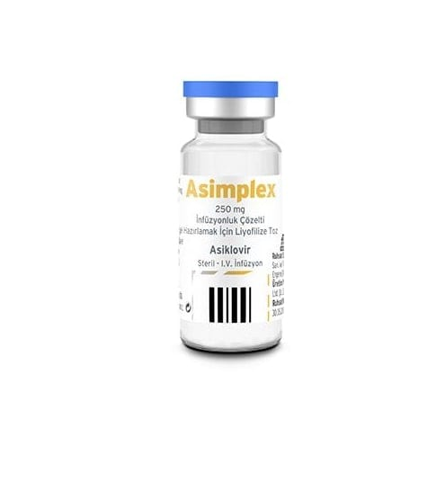

Asimplex 250 mg İnfüzyonluk Çözelti Hazırlamak İçin Liyofilize Toz 5 Flakon

Ne için kullanılır
KT · Bölüm 1ASİMPLEX, etkin madde olarak asiklovir içerir. Asiklovir, “antiviral” adı verilen bir ilaç grubunun üyesidir.
ASİMPLEX, Herpes simpleks virüs (HSV) ve Varicella zoster virüs (VZV) adlı virüslere karşı etkili antiviral bir ilaçtır.
ASİMPLEX, suçiçeği, zona, uçuk, genital herpes ve Herpes simpleks’in sebep olduğu diğer iltihapların tedavisinde endikedir. Uçuk, genital herpes ve diğer herpes iltihaplarının yeniden görülmesini engeller. Bağışıklık sistemi yetersiz hastalarda Herpes simpleks’in neden olduğu iltihabın önlenmesinde kullanılır.